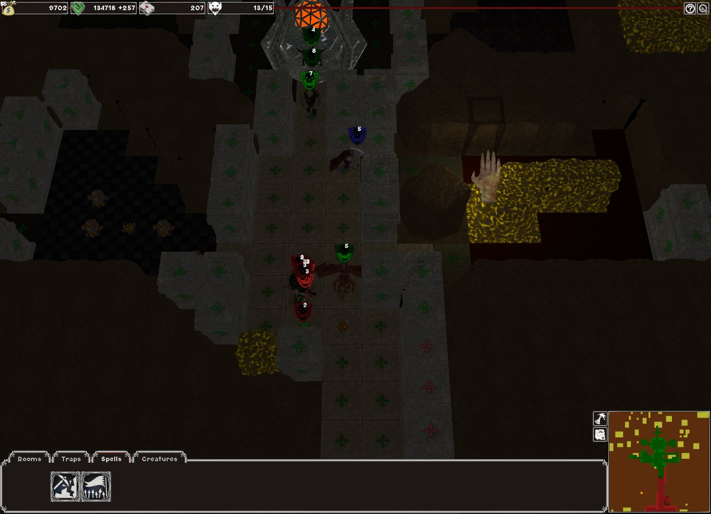
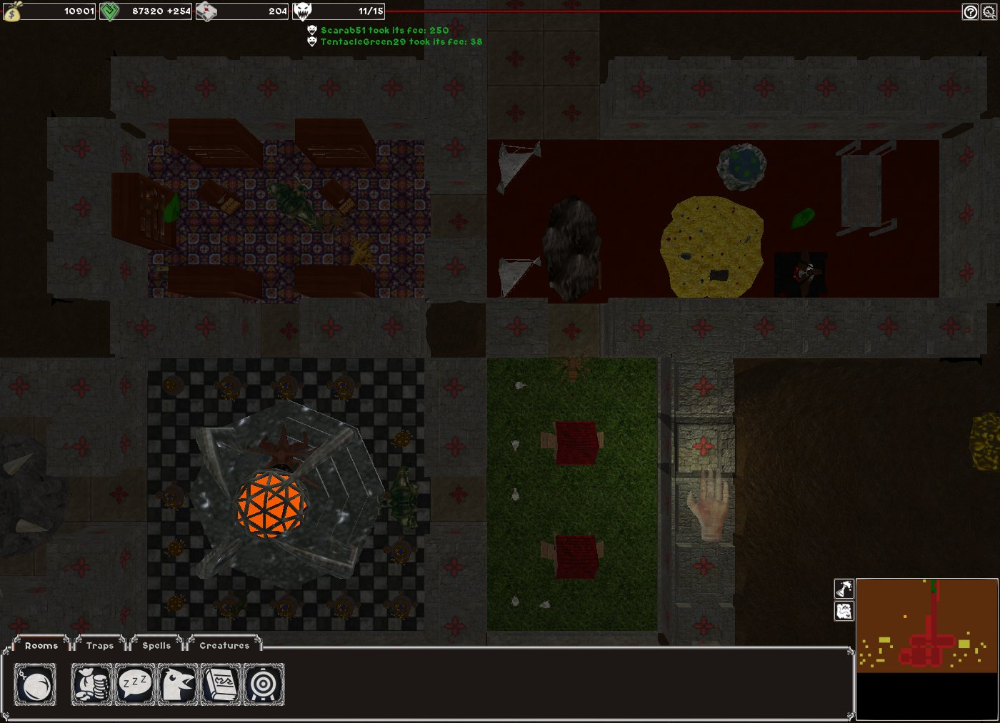
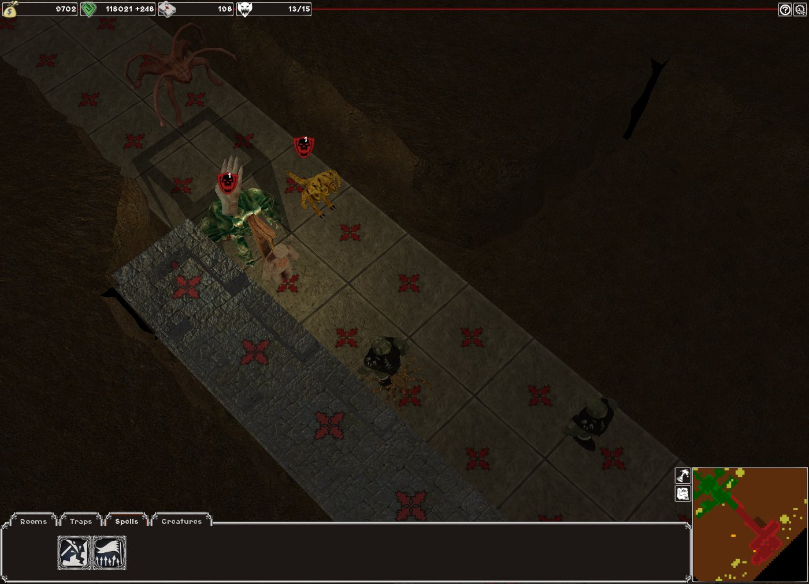

News
We've done it! 0.5.0!
Yes, my minions, you heard well. The lands will once again tremble before our evil influence spread by our tool of pure mad joy. :3
OpenDungeons 0.5.0 is now released.
0.5.0 does also mean we're more or less in the middle of the road in the 1.0 roadmap, but all the core features of the game are already rock-solid!
Everyone in the team has been involved in making, tweaking, reviewing, remaking stuff until satisfaction (or utter faintness). And I think they deserve not being whipped for once. ;) (Maybe tomorrow...)
If you want to have a live introduction to all those features, feel free to have a look at our new gameplay tutorial video made by Akien! :D
|  |  |
If not, here are the most impressive achievements done in this milestone:
This enormous work and the fire it has stoked in our evil hearts has been ignited by Oln, who has been whipped worked willingly
until bringing us full normal support to any game models, permitting to reach a new level of dark beauty.
One of the most lacking pieces of 0.4.9 is now a reality, you won't be able to cheat by lurking into your opponent's lair. You won't be able anymore to sneak into his dungeon while he is chasing somebody else, ... No, this is now history.
You will have to discover the bowels of the unknown territory spread before your dark will and risk their dangers to get wealth. Blame hwoarangmy for this cool feature.
Behind those two words are a lot blood. As you can now tell a creature's team or health by hovering the cursor upon it, or by pressing ALT. The skull flags will also tell the creatures level. Melee fights will never be a problem again...
You're lucky, my minions. As hwoarangmy used his darkest spells of will to chop down this feature into the box. You can now save the game at any time and load later thanks to his efforts.
Yes, Magic has finally arrived and mana is no more a useless old woman gossip from ancient legends, it's your tool for EVIL.
You will have to summon worker minions with a magic spell as those lazy critters won't appear out of the temple by themselves anymore.
You will also be able to forward your fighters into battle using the well known 'Call to War' spell...
What were you thinking?!? That the gods of dark dungeons matters would provide all the technology without a counter word? No, it's not gonna happen anymore. You will now have to make your creatures work in your library to discover new rooms/spells and traps. And that's only the beginning as currently the order is predefined but later, you will be able to define your own research strategy. ;>
Smoothly moving, as a true cursor and with new animations!
Yes, we like that one and hwoarangmy did it!! It is almost perfect and hopefully one day it will be!
|  |  |
Other noteworthy features:
- Improved map editor - Because you're worth it.
- Different viewpoints - Using the 'V' key.
- Tileset configurable + biomes support. - So we can add some other kind of dirt to dig. ;)
- Creatures can drop stuff on death. - Not used much, but presents are always appreciated. ;)
- Dead creatures need no gold, steal the unspent savings of fallen creatures for fun and profit
- Packaging fixes + resource analysis scripts to avoid packaging useless stuff. - So downloads are less lengthy. :)
For a more detailed list of the new features feel free to have a look at either our release notes or the corresponding summary on github.
Go grab it firmly in the downloads and... Enjoy!!
OpenDungeons 0.4.9 release
Ho ho ho, dear awful Keepers and fearful Keeperesses,
We wish you a merry, jolly and vicious torture time with you dreadful minions. And to help you process the knight's laughable will into madness with more ease and pleasure, we are utterly satisfied to introduce you to the new version of our favourite dark magic tool. :)
Yes, OpenDungeons 0.4.9 is now unleashed!
General changelog:
- Multiplayer support for demons' sake!!
- Rock-solid core gameplay!
- Very moddable levels and creatures!
- New rooms!
- A functional AI that can win!
- Traps!
- New revamped UI!
- More efficient workers and a good battle logic!
- The game is very playable already! :-D
- More at the milestone description on GitHub.
So, what has happened all this year already?
To answer simply, the project had reached a stall and to make it alive again, the OD artists requested a new Windows 32 snapshot to see what they could improve.
Bertram first answered the call and tried for a few weeks to make it build and run again on Windows. Even if that guy had a hard time to make it compile at the time (and was rather a noob with such deps), it permitted to point out certain problems, such as the need to upgrade the dependencies and report certain compilation problems upstream.
Paul and him then paired on this one and a first Win32 snapshot went online after a month or two.
Then, by getting familiar with the code and seeing it run, Bertram couldn't leave the project like that and started proposing patches to fix this and that, helped by oln, Paul and nido at the time.
But the actual momentum happened with the arrival of hwoarangmy, and soon after with Akien, who both helped coordinating the project, and for hwoarangmy, recoded half of it (and more changes to it are incoming). ;-)
While Danimal was improving the game models, eugeneloza was on the new minions beds, and Akien was on packaging stuff and Bertram was mainly on upgrading the GUI.
A lot of features, bugfixes and cleanups happened in very little time, when you think about it.
Let's take a few lines to thank the cool team that gathered here and poured a lot of blood into the development evil cup to produce this. Hopefully, they will never realize all the foolishness it is to think they're leading the project while everybody knows Danimal is secretly pulling all the strings.
Development didn't go without brain damages, though. Bertram developed an unexplainable and pathetic fear for Big Knights, eugeneloza had to use his big voice, and Akien even had to start learning how to code.
But a lot is also planned for 0.5.0 with almost completed addition of an actual Fog of war thanks to hwoarangmy, some work on the GUI, on the materials, on more rooms, on user settings support, etc.
If you're simply curious or better if you wanna help, test, or document the next version, feel free to have a look at the issues on GitHub, and get in touch!
Some crazy guy willing to work on improving the visuals would be perfect but we'll always find a use for you, be it on testing, or down below the dungeon, tortured with some lava. ;->
Have a dreadful year, my pathetic minions.
Downloads
Below you can find download links to the latest files.
- OpenDungeons 0.5.0 (Source code)
- OpenDungeons 0.5.0 (Windows 32bit binary)
- OpenDungeons 0.5.0 (Linux 32bit binary)
- OpenDungeons 0.5.0 (Linux 64bit binary)
Older releases:
If you're in need of some older binaries, they can be found here.
Linux packages
OpenDungeons is currently available in package repositories for some Linux distributions. Feel free to contact us if your package is not in the list.
- Mageia 5: Core Release official repository.
- Ubuntu: PlayDeb third-party repository.
- Lutris: cross-distro gaming platform.
Contact
You can contact use by following means:
- IRC: irc.freenode.net#opendungeons
- Forums: forum.freegamedev.net
About
OpenDungeons is an open source, real time strategy game sharing game elements with the Dungeon Keeper series and Evil Genius. Players build an underground dungeon which is inhabited by creatures. Players fight each other for control of the underground by indirectly commanding their creatures, directly casting spells in combat, and luring enemies into sinister traps.